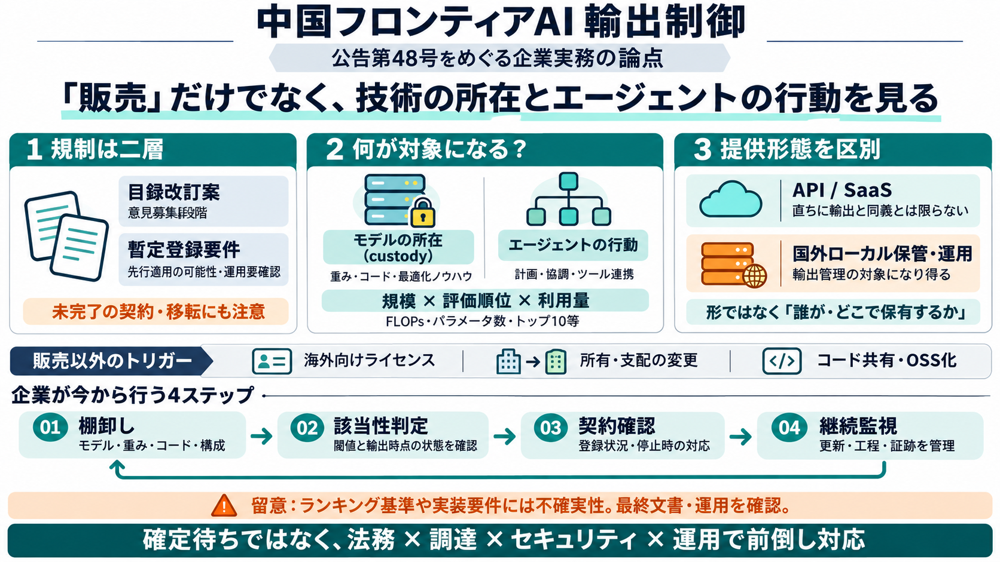

China’s First Frontier AI Export Controls: MOFCOM Announcement No. 48 – Lab Space
On October 16, 2026, China’s Ministry of Commerce (MOFCOM) and Ministry of Science and Technology (MOST) issued Announce…

On October 16, 2026, China’s Ministry of Commerce (MOFCOM) and Ministry of Science and Technology (MOST) issued Announce…
The Ministry of Commerce (MOFCOM) and Ministry of Science and Technology (MOST) issued Joint Announcement No. 48 of 2026…
On 16 October 2026, China's Ministry of Commerce (MOFCOM) and Ministry of Science and Technology (MOST) issued Announcem…
Now China has decided AI models belong on that list as well. On October 16, MOFCOM released Announcement 48 of 2026, det…
# 中华人民共和国商务部MOFCOM on X: "MOFCOM Spokesperson’s Remarks on the Revision of the Catalogue of Technologies Prohibited and …